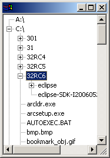

| Eclipse Corner Article |
Summary
Virtual Tables and Trees allow developers to quickly create Tables and Trees with large amounts of data and populate them efficiently.
This article is an overview of how to use virtual Tables and Trees within SWT applications.
By Beatriz Iaderoza and Grant Gayed, IBM Ottawa Lab
June 5th, 2006
When creating a Table or Tree in an SWT application, each item (row) is represented by a TableItem or TreeItem. The creation of these items can be time consuming if there is a very large number of them, or if computing the data they require is expensive. This can pose a problem in traditional Tables and Trees because their items all get created up-front, which can make initial population prohibitively slow. Additionally, if the user does not view all of the created items, as is very often the case with large Tables and Trees, then much of this initial cost is wasted.
Virtual Tables and Trees are ideal for handling situations like this. In virtual Tables and Trees, items are created on an on-demand basis. This ensures that no extra effort or memory footprint is spent creating items that are never viewed, and it spreads out the Table or Tree population effort over the lifetime of the control instead of being completely up-front.
One example scenario where a virtual Table would be useful is for displaying the results of a search query on a library book database. This could exhibit a slow initial population time with a non-virtual Table because of the potential for huge result sets and expensive database queries required to retrieve item summary information. However, a virtual table should perform well here since the initial population time would just be the time required to create the first page of items. In a system with good result ranking heuristics these could prove to be the only items ultimately viewed by the user.
The following sections describe how to use virtual Tables and Trees, and provide example code snippets with explanations. It should be noted that the Virtual Table section contains concepts that are applicable to virtual Trees as well.
In order to populate a virtual Table, you must specify the number of items it will contain and an SWT.SetData listener that will set data on provided items. The item count is used by the Table to set its vertical scrollbar's maximum and thumb values to reflect a table of this size, and can be changed throughout its lifetime.
When the data for an uninitialized item is required, often because the item became visible to the user for the first time, the item is automatically created and passed to the SWT.SetData listener to have its data set. The item data consists of all of the item's attributes (texts, images, colors and checked state). The operating system is free to request the data for any item in any order. Once an item has been initialized, either by a SWT.SetData listener or by TableItem API such as setText(), then its value becomes permanent and the SWT.SetData listener is not called to set its data again. The only exception to this occurs if an item is cleared with Table clear() API, in which case the listener will be called to set its data again as necessary.
Let us walk through a simple example that shows the basic concepts involved in creating and using a virtual Table. The example in Listing 1 demonstrates the creation of a Table with 10000 items, and the modification of an item that has already had its data set:
| 1 |
int COUNT = 10000;
|
| 2 |
final String [] itemStrings = new String [COUNT];
|
| 3 |
for (int i = 0; i < COUNT; i++) {
|
| 4 |
itemStrings [i] = "item " + i;
|
| 5 |
}
|
| 6 |
final Table table = new Table(parent, SWT.BORDER | SWT.VIRTUAL);
|
| 7 |
table.addListener(SWT.SetData, new Listener() {
|
| 8 |
public void handleEvent(Event event) {
|
| 9 |
TableItem item = (TableItem)event.item;
|
| 10 |
int index = event.index;
|
| 11 |
item.setText(itemStrings [index]);
|
| 12 |
}
|
| 13 |
});
|
| 14 |
table.setItemCount(COUNT);
|
| 15 |
Button button = new Button(parent, SWT.PUSH);
|
| 16 |
button.setText("Change item at index 5");
|
| 17 |
button.addListener(SWT.Selection, new Listener() {
|
| 18 |
public void handleEvent(Event event) {
|
| 19 |
itemStrings [5] = "item " + System.currentTimeMillis();
|
| 20 |
table.clear(5);
|
| 21 |
}
|
| 22 |
});
|
Listing 1: Adding 10000 items to a virtual Table, and arbitrarily clearing the fifth item.
Lines 2-5:
Creates the strings that will be used to set the item data in the example's Table.
Line 6:
Creates the Table. In order to create a virtual Table, SWT.VIRTUAL is specified in its constructor's style argument.
Note that if you have other styles for the Table, such as BORDER, then the styles are OR'd together as shown.
Lines 7 and 8:
Adds a SWT.SetData listener to the Table. This is the listener that is responsible for setting the data on the item in the event's item
field whenever invoked.
Line 9:
Gets the TableItem that is to have its data set.
Lines 10 and 11:
Gets the index of the item and sets its text accordingly. The index of this item can be found in the event's index field (@since 3.2).
Alternatively, this index can be computed with Table.indexOf(TableItem).
Line 14:
Sets the item count of the Table to 10000, indicating that it should be able to hold 10000 items.
Lines 15 and 16:
Creates a Button that will trigger a value change in the Table's fifth item.
Lines 19 and 20:
Handles a press of the button by putting a new value into index 5 of the itemStrings array, and clearing index 5 in the Table. If this item subsequently becomes
visible to the user then the SWT.SetData listener will be invoked with it as the item, and the itemStrings array's new value will be set into it.
In addition to the described SWT.SetData listener, data can still be set on uninitialized items in a virtual Table with typical TableItem APIs such as setText(...), setImage(...), etc. Table.getItem(int) can be used to get a TableItem that has not yet been initialized but is within the Table's specified item count. An application that is retrieving records from an external source, such as the presented library database scenario, may benefit from selectively setting data on some items before they are requested by the SWT.SetData listener. For example, if there is a high cost associated with establishing each database connection, then retrieving a chunk of records whenever a query is required can yield better results than initiating separate connections for each item that is requested. Listing 2 demonstrates this approach using a retrieval block size of 64 records.
| 1 |
final int COUNT = 100000;
|
| 2 |
final int PAGE_SIZE = 64; |
| 3 |
final Table table = new Table (shell, SWT.VIRTUAL | SWT.BORDER); |
| 4 |
table.addListener (SWT.SetData, new Listener () { |
| 5 |
public void handleEvent (Event event) { |
| 6 |
TableItem item = (TableItem) event.item; |
| 7 |
int index = event.index; |
| 8 |
int page = index / PAGE_SIZE; |
| 9 |
int start = page * PAGE_SIZE; |
| 10 |
int end = start + PAGE_SIZE; |
| 11 |
end = Math.min (end, table.getItemCount ()); |
| 12 |
for (int i = start; i < end; i++) { |
| 13 |
item = table.getItem (i); |
| 14 |
item.setText ("Item " + i); |
| 15 |
} |
| 16 |
} |
| 17 |
}); |
| 18 |
table.setItemCount (COUNT); |
Listing 2: Loading table items from a database in blocks of 64 records.
Line 3:
Creates the virtual Table by specifying style SWT.VIRTUAL.
Lines 4 and 5:
Adds a SWT.SetData listener to the Table, which is responsible for setting the data on the item in the event's item field whenever invoked.
Lines 7 to 11:
Gets the index of the item, and computes the start and end item indices of its logical 64-item page.
Lines 12 to 15:
Sets the data on all of the items on this logical page. The SWT.SetData listener will not be subsequently invoked for any of these items.
Line 18:
Sets the item count of the Table to 10000, indicating that it should be able to hold 10000 items.
(@since 3.2)
Virtual Trees are used in a very similar manner to virtual Tables, but with the added facet of child items. In addition to being able to specify the number of items in a Tree, which represents its count of root-level items, an item count can also be set on any item. This provides an opportunity to easily defer computing and setting data on an item's children until it is first expanded by the user. Similarly, API for clearing items is defined on both Tree and TreeItem so that root and non-root items can be cleared on an indexed basis.
The example in Listing 3 demonstrates a simple file system explorer application (shown in Figure 1). It uses a virtual Tree in order to defer TreeItem creation and accessing of the local file system until necessitated by the user.
| 1 |
final Tree tree = new Tree(parent, SWT.VIRTUAL | SWT.BORDER);
|
| 2 |
File [] roots = File.listRoots(); |
| 3 |
tree.setData(roots); |
| 4 |
tree.addListener(SWT.SetData, new Listener() { |
| 5 |
public void handleEvent(Event event) { |
| 6 |
TreeItem item = (TreeItem)event.item; |
| 7 |
TreeItem parentItem = item.getParentItem(); |
| 8 |
File file = null; |
| 9 |
if (parentItem == null) { |
| 10 |
/* root-level item */ |
| 11 |
File [] files = (File [])tree.getData(); |
| 12 |
file = files [event.index]; |
| 13 |
item.setText(file.toString()); |
| 14 |
} else { |
| 15 |
File [] files = (File [])parentItem.getData(); |
| 16 |
file = files [event.index]; |
| 17 |
item.setText(file.getName()); |
| 18 |
} |
| 19 |
if (file.isDirectory()) { |
| 20 |
File [] files = file.listFiles(); |
| 21 |
if (files != null) { |
| 22 |
item.setData(files); |
| 23 |
item.setItemCount(files.length); |
| 24 |
} |
| 25 |
} |
| 26 |
} |
| 27 |
}); |
| 28 |
tree.setItemCount(roots.length); |
Listing 3: A file system explorer application that uses a virtual Tree.

Figure 1: The file system explorer application.
Line 1:
Creates the virtual Tree by specifying style SWT.VIRTUAL.
Lines 2 and 3:
Gets the root-level file system entries and stores them as model data in the Tree.
Lines 4 and 5:
Adds a SWT.SetData listener to the Tree, which is responsible for setting the data on the item in the event's item field whenever invoked.
Line 6:
Gets the item that is to have its data set.
Line 7:
Gets the item's parent item, which contains its File entry.
Lines 10 to 13:
In this case the TreeItem to have its data set is a root-level item, so its File entry is retrieved from the Tree according to its index, and its text is set.
The parent-relative index of the item can always be found in the event's index field.
Lines 15 to 17:
In this case the TreeItem to to have its data set is not a root-level item, so its File entry is retrieved from its parent item according to its index,
and its text is set.
Lines 19 to 22:
If the item represents a directory then its child file system entries are retrieved and stored as model data on the item, in case the item is subsequently expanded by the user.
Line 23:
Sets the item's itemCount to the child count. This will ensure that an expander icon is shown beside the item, and if it is expanded by the user, that
the correct number of child items will be created.
Virtual Tables and Trees provide an easy way to populate these controls on an on-demand basis. This can greatly reduce computational effort and memory footprint, and can preserve UI responsiveness for large data sets.
Java and all Java-based trademarks and logos are trademarks or registered trademarks of Sun Microsystems, Inc. in the United States, other countries, or both.